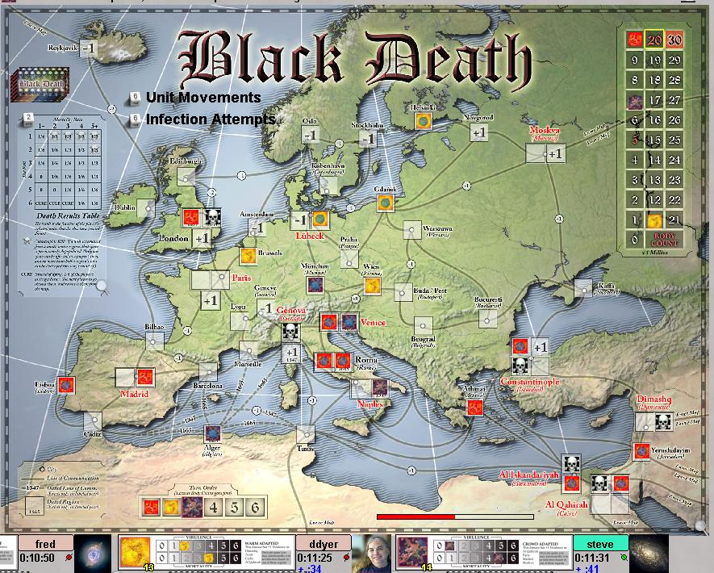

Black Death
Black Death is an area combat game, based loosely on the concept
of deadly diseases fighting to be the most successfull - ie; to kill
the most people. In practice, it also could be regarded as a
variant of Risk with a disease theme.
Each player decides the
Virulence and Mortality of his disease, and directs it's expansion.
Infection and Mortality are partly determined by dice rolls (as in
Risk) but directed by you.
Needless to say, including this game was partly motivated by the current pandemic, but the game predates Covid-19 by many years.
Robots: Not bad at all, but beatable.
|

|